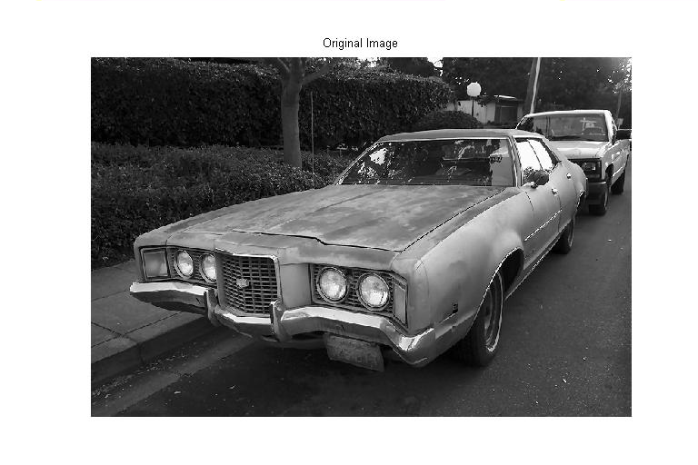
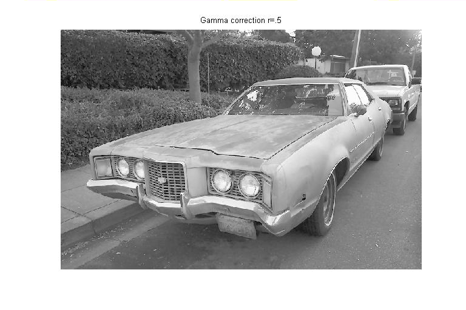
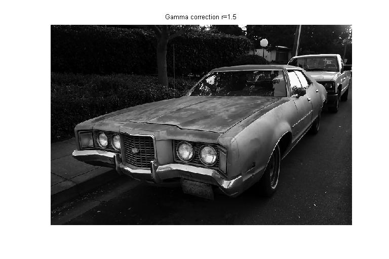

| DiscreteWavelets Toolbox |
Gamma correction for images
B = GammaCorrection(A,r)
B = GammaCorrection(A,r) takes a matrix A and a parameter r and performs gamma correction on the image. b_jk is obtained by calculating round(255*(a_jk/255).^r).
The elements of A must be integers k satisfying 0 <= k < 256. The parameter r must be a positive number.
For 0 < r < 1, the result B is lighter than input A; for r > 1, the result B is darker than input A.
Perform two types of gamma correction on an image.
gry=ImageNames('ImageType','GrayScale'); %Get file names of images included with the toolbox
A=ImageRead(gry{2}); %Read the image
B=GammaCorrection(A,.5); %Gamma correction for r=.5
C=GammaCorrection(A,1.5); %Gamma correction for r=1.5



© 2007-2008 Patrick Van Fleet